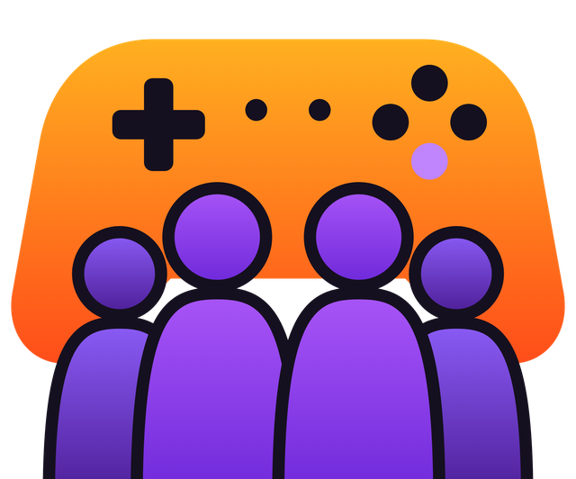

Bot Discord 100 % en français · gratuitOn joue à quoi ce soir ?
La Squad compare les jeux de toute ta squad (Steam, Game Pass, Epic, Battle.net…) et te dit en 10 secondes à quoi vous pouvez jouer ensemble. Fini les 30 minutes de débat.
Tout ce qu'il faut pour vos soirées
Pensé pour les groupes d'amis qui jouent sur PC, sans prise de tête.
Jeux en commun
Les jeux multijoueurs que tout le salon vocal possède, triés par ce que vous jouez le plus.
Il manque à un pote ?
Le bot affiche le meilleur prix du moment, la réduction et le prix le plus bas historique.
Game Pass, Epic, Battle.net
Pas que Steam : active le Game Pass ou ajoute tes jeux Epic, Riot, Battle.net en un clic.
Vote en direct
Personne n'arrive à se décider ? Un vote avec des boutons, résultat en quelques minutes.
Soirées organisées
« Samedi 21h ? » Inscriptions par boutons, places limitées, rappels en message privé et annonce juste avant le début.
Famille Steam
Les jeux que ta famille Steam te prête comptent aussi, et le bot vérifie qu'il y a assez d'exemplaires pour jouer tous ensemble.
Tirage au sort
Un clic sur 🎲 et le hasard choisit, relancez autant de fois que vous voulez.
Recommandations
Vous avez adoré Valheim ? Le bot vous propose des jeux du même style, avec leur prix.
La mémoire de la squad
Parties enregistrées, notes, jeux préférés et ceux qu'il faudrait ressortir.
Wrapped mensuel
Chaque mois, le récap de la squad : podium, découvertes, coup de cœur et MVP. À partager !
Alertes promo
Le bot prévient la squad quand un jeu qu'il manque à certains passe en promo, et toi en message privé quand un jeu de ta liste de souhaits Steam est en promo.
Réglages en un écran
Les admins règlent tout dans /reglages, sur un seul écran.
Comment ça marche ?
Trois étapes, moins d'une minute.
Ajoute le bot
Clique sur « Ajouter à Discord » et choisis ton serveur.
Enregistre tes jeux
Tape /profil : relie ton Steam, active le Game Pass si tu l'as, ajoute le reste en un clic.
Rejoins le vocal
Avec tes potes, tape /onjoueaquoi. C'est tout !
Les commandes
Toutes en français, toutes avec des explications dans Discord.
/onjoueaquoi | Les jeux multijoueurs que tout le salon vocal possède, en liste ou un jeu à la fois avec sa description, avec tirage au sort, vote et soirée en un clic. |
/encommun | Tes jeux en commun avec qui tu veux, même hors vocal, avec des filtres. |
/jeu | La fiche d'un jeu : description, prix, avis Steam, et qui l'a dans ta squad. |
/presque | Les jeux qu'il manque à 1 à 3 potes, avec le meilleur prix, des filtres (Coop, PvP, Solo, genre) et un tri par prix ou réduction. |
/recommandations | Des jeux à découvrir selon les goûts de la squad. |
/nouveautes | Les nouveautés, tendances et sorties à venir sur Steam, un jeu à la fois avec sa description (ou en liste), à filtrer (solo, coop, PvP, gratuits, prix…) et à trier. |
/vote | Un vote avec boutons, sur vos jeux en commun ou ceux que tu proposes. |
/soiree | Organise une soirée (une heure et, si besoin, un jour : ex. 21h, samedi) avec inscriptions, invitations en message privé, rappels et annonce. Elle peut revenir toute seule chaque semaine. |
/agenda | Tes soirées à venir sur tous tes serveurs : change tes rappels, choisis ceux par défaut, coupe-les tous ou arrête tes soirées récurrentes. |
/mesnotes | Ton carnet de joueur : tes jeux notés, des jeux qui pourraient te plaire et tes dernières parties. |
/wrapped | Le récap du mois de la squad, publié automatiquement chaque 1er du mois. |
/profil | Ta carte de joueur (jeux les plus joués, ceux du moment, partenaire de toujours) : lie ton Steam et gère tes jeux (Game Pass, Epic, Battle.net, Riot…), tes alertes perso, qui peut voir ta carte et tes données, ou regarde la carte d'un pote. |
/aide | Le mode d'emploi, par thème. |
/mesdonnees | Efface toutes tes données, immédiatement. |
/reglages | Admins : alertes promo, Wrapped automatique, soirées, votes, recherches et accès. |
Questions fréquentes
C'est gratuit ?
Oui, toutes les fonctionnalités actuelles sont gratuites.
Le bot a-t-il accès à mon compte Steam ?
Non. Il lit seulement les informations publiques de ton profil (pseudo et liste de jeux) via l'API officielle de Steam. Il ne demande jamais ton mot de passe.
Le bot ne voit aucun de mes jeux, pourquoi ?
Tes détails de jeux sont sûrement privés. Sur Steam : ton profil → Modifier le profil → Paramètres de confidentialité → « Détails des jeux : Public ». Puis tape /profil → ⚙️ Gérer mon compte → Steam → 🔄 Actualiser.
Le bot écoute-t-il le salon vocal ?
Non. Il regarde seulement qui est connecté au salon au moment où tu tapes une commande, pour savoir qui fait partie de la squad. Il n'écoute rien et ne lit pas vos messages.
Comment supprimer mes données ?
Tape /mesdonnees : tout est effacé immédiatement. Voir aussi la politique de confidentialité.
Un jeu possédé sur Game Pass et sur Steam, ça marche ensemble ?
Seulement si le jeu propose le crossplay entre Steam et Xbox. Le bot écrit « crossplay ? » à côté de ces jeux pour que vous vérifiiez.
Prêt pour ce soir ?
Ajoute La Squad et lance ta première partie en moins d'une minute.
➕ Ajouter à Discord